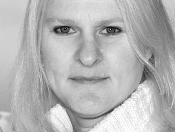

Marian Bantjes
Introduction
Marian Bantjes (born 1963) is a Canadian designer, artist, illustrator, typographer and writer.
Bantjes started working in the field of visual communication in 1983 and worked as a book typesetter from 1984–1994. She became well known as a talented graphic designer from 1994–2003, when she was a partner and senior designer at Digitopolis in Vancouver, BC, Canada, where she created identity and communication designs for a wide range of corporate, education and arts organizations.[1] She owned and ran the design firm, with a small staff.[2]
In 2003 Marian left her firm and "strategic design" behind to embark on the work that she has since become internationally known for. Describing herself as a Graphic Artist, working primarily with custom type and ornament, Bantjes' highly personal, obsessive and sometimes strange graphic work has brought her international recognition and fame as a world-class visual designer.[3] Bantjes is known for her detailed and lovingly precise vector art, obsessive hand work, patterning and highly ornamental style.
Go Back

Accolades
Stefan Sagmeister calls Bantjes "one of the most innovative typographers working today," and Noreen Morioka calls Bantjes "the Doyald Young of her generation." In 2005 Bantjes was named one of 25 up-and-coming Designers to Watch (STEP Magazine, January 2005).
Bantjes' clients include Pentagram, Stefan Sagmeister, Saks Fifth Avenue, Bruce Mau Design, Young & Rubicam Chicago, Anni Kuan, Houghton Mifflin, Print Magazine, Wallpaper* , WIRED, The Guardian (UK), The New York Times, among others. She has also worked on design materials for AIGA, TypeCon 2007, and the Society of Graphic Designers of Canada (GDC).
Her work has been featured in STEP, étapes (Paris), Azure, Matrix (Quebec) Tupigrafia (Brazil) and Print, Fontshop's Font 004, and Eye magazine (#58). She has written the design book "I wonder", published by the Monacelli Press, which was dubbed one of the 13 best design books of 2010 by Fastcode design.[4] Bantjes has been honored with numerous awards and her work is now part of the permanent collection at the Cooper-Hewitt National Design Museum.[5]
Go Back
Work
Bantjes is an accomplished writer on the subjects of typography and design, and was a regular contributor to the popular design website Speak Up. Speak Up is no longer in publication. Bantjes is frequently invited to sit on design award juries and speak at design conferences and design schools around the world. Bantjes says "throwing your individuality into a project is heresy" but she has built a career doing just that, as her signature style is unmistakable.[6] In 2007 she released Restraint, a typeface that integrates her style of ornamentation to be used as shapes and boarders.
From 2002–2006 Bantjes served as the Communications VP of the Society of Graphic Designers in British Columbia. She was also the Chair and Creative Director of the 2006 Graphex Canadian design awards. In 2008 Bantjes was invited back to serve as a judge for 'Graphex 2008 Canadian National Design Awards'. Bantjes lives and works internationally from her base on Bowen Island off the west coast of Canada, near Vancouver, BC.[8]
Go Back